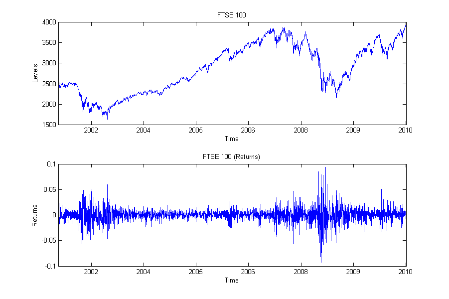
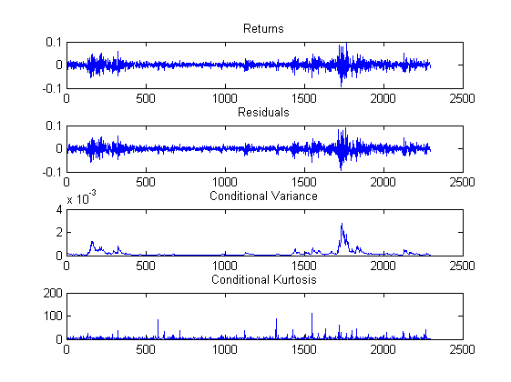
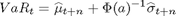
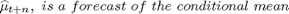
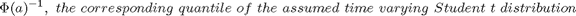
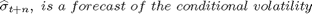
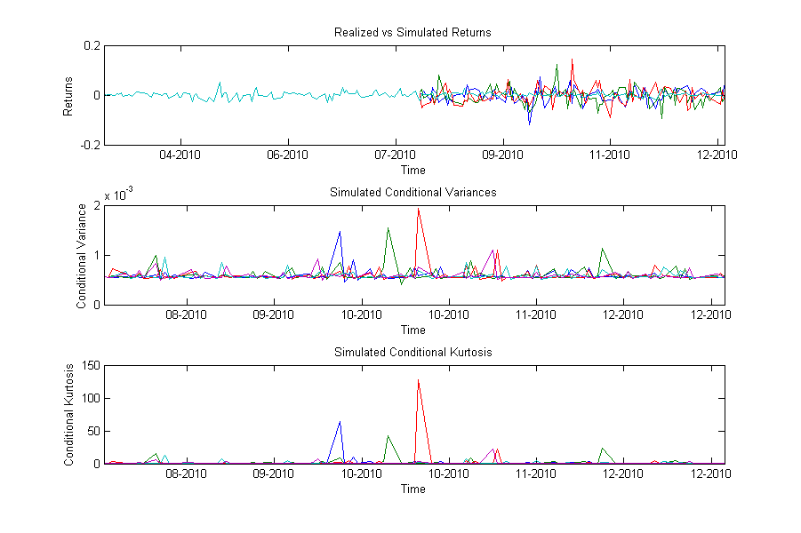

Contents
Applications
The following examples will guide you through some of the functionality built in this toolbox. Specifically, how to estimate the GARCH-K model, forecast and simulate.
The data used for the examples are daily prices of the FTSE 100 index for the period from 03/01/2000 to 31/12/2010, which is available from finance.yahoo.com.
clc clear % Import of data load('data.mat'); % Estimate the continious returns of the series data = price2ret(levels,[],'Continuous'); % Convert the dates to serial date number dates = datenum(cell2mat(levelsdates(3:end)), 'dd/mm/yyyy'); % Plot the levels and returns of FTSE 100 figure subplot(2,1,1), plot(dates,levels(2:end,1)); datetick('x','yyyy','keepticks'); xlim([dates(1), dates(end)]); title('FTSE 100');xlabel('Time'); ylabel('Levels'); subplot(2,1,2), plot(dates,data(:,1)); datetick('x','yyyy','keepticks'); xlim([dates(1), dates(end)]); title('FTSE 100 (Returns)'); xlabel('Time'); ylabel('Returns'); set(gcf,'Position',[100,100,900,600]) snapnow; close(gcf) % Some other options warning('off', 'MATLAB:nearlySingularMatrix');
Estimating GARCH models
This example illustrates how to estimate the ARMAX(1,1,0)-GARCH(1,1)-K(1,1) model using the garchk function, as well as plot the FTSE 100, its estimate variance, kurtosis and residuals using the garchkplot function. The inputs are the GARCH-K model AR, MA, GARCH and ARCH. The outputs contain the estimated parameters, standard errors, value of the loglikelihood function, conditional variance, kurtosis, residuals and summary of a variety of statistics such as robust standard errors and scores, among others.
[parameters, stderrors, LLF, ht, kt, nu, resids, summary] = garchk(data(:,1), 'GARCH', 1,1,0,1,1,0, [], options);
------------------------------------------------- Specification: ARMAX(1,1,0) - GARCH(1,1,0) - K(1,1) Convergence achieved after 34 iterations ------------------------------------------------- Parameters Coefficients Std Errors T-stats ------------------------------------------------- C 0.0005 0.0004 1.3522 AR1 0.1774 0.4732 0.3749 MA1 -0.2492 0.4667 -0.5339 K 0.0000 0.0000 2.5304 ARCH1 0.1160 0.0626 1.8522 GARCH1 0.8817 0.0429 20.530 KK 0.9787 5.8302 0.1679 ARCHK1 0.3244 2.1985 0.1476 GARCHK1 0.3598 1.0133 0.3551 ------------------------------------------------- R-Squared: 0.0054 Adjusted R-Squared: 0.0020 Log Likelihood: 8603 Akaike Information Criteron: -17188 Bayesian Information Criteron: -17136 -------------------------------------------------
garchkplot(data(:,1),ht,kt,resids)
Forecasting Volatility
The garchkfor and garchkfor2 functions are applied to forecast the mean and volatility processes. The inputs of the functions are the GARCH model, the number of forecasted periods. The difference between the two functions is that the former estimates the GARCH model whereas the later passes the already estimated parameters to the function. In this example we will forecast 10 days ahead using the ARMAX(1,1,0)-GARCH(1,1,0)-K(1,1) model. The mean, volatility and kurtosis forecasts will be saved in the MF, VF and KF vectors, and the cumulative (or multiperiod holdings) mean and volatility forecasts in MC and VC respectively:
[MF, VF, KF, MC, VC] = garchkfor2(data(:,1), resids, ht, kt, parameters, 'GARCH',1,1,1,1,10);
[MF, VF, KF, MC, VC]
ans =
0.0030 0.0001 6.1647 0.0030 0.0080
0.0003 0.0001 5.1968 0.0033 0.0113
0.0005 0.0001 4.5345 0.0038 0.0139
0.0005 0.0001 4.0813 0.0043 0.0161
0.0005 0.0001 3.7713 0.0048 0.0181
0.0005 0.0001 3.5591 0.0053 0.0199
0.0005 0.0001 3.4140 0.0058 0.0216
0.0005 0.0001 3.3146 0.0063 0.0232
0.0005 0.0001 3.2467 0.0068 0.0247
0.0005 0.0001 3.2002 0.0073 0.0261
Estimating Value-at-Risk
The garchkvar and garchkvar2 functions are applied to estimate Value-at-Risk for for both long and short positions. The inputs of the functions are GARCH model the number of forecasted periods and a% losses. The VaR is estimated as:

where:
  .
In this exampe we will forecast 10 days ahead 99% VaR estimates using the ARMAX(0,0,0)-GARCH(1,1,0)-K(1,1) model The long and short positions will be saved in the VaR variable:
VaR99 = garchkvar2(data(:,1),resids, ht, kt, parameters, 'GARCH', 1, 1, 1, 1, 10, 0.99);
VaR99
VaR99 =
0.0282 -0.0221
0.0376 -0.0309
0.0442 -0.0365
0.0493 -0.0406
0.0535 -0.0438
0.0573 -0.0466
0.0608 -0.0492
0.0643 -0.0516
0.0677 -0.0541
0.0711 -0.0565
GARCH Simulation
The garchsim function is applied to simulate volatility, kurtosis and returns series. It's inputs are the GARCH parameters, model,nthe ARCH and GARCH effects, number of samples and number of paths. Additionally a vector of time series of positive pre-sample conditional standard deviations and kurtosis may be provided, which the model will be conditioned. Make sure however that these vectors have sufficient observations in order to initialize the conditional variance and kurtosis processes. The outputs are a vector of simulated returns with GARCH variances, kurtosis and a vector of conditional standard deviations. In this example we will simulate 5 paths of 100 days ahead based on the volatility estimate at date 13/08/2010 (i.e. 100 days before the end of the sample) of the ARMAX(0,0,0)-GARCH(1,1)-K(1,1) model. Then plot the realized and simulated returns, conditional variances and conditional kurtosis.
options.OutputResults = 'off'; [parameters, stderrors, LLF, ht, kt, nu, resids, summary] = garchk(data(1:end-100,1), 'GARCH', 1,1,0,1,1,0, [], options); [Returns, Sigmas, Kurtosis] = garchksim(parameters, 'GARCH', 1, 1, ht, kt, 0, 100, 5); holder1=nan(size(data(:,1),1),5); holder1(end-99:end,:) = Returns; figure subplot(3,1,1),plot(dates(end-200:end),holder1(end-200:end,1:3),'DisplayName','Simulated Returns'); hold all; plot(dates(end-200:end),data(end-200:end,1),'DisplayName','Returns'); hold all;hold off;figure(gcf);datetick('x','mm-yyyy','keepticks'); xlim([dates(end-200), dates(end)]); title('Realized vs Simulated Returns'); xlabel('Time'); ylabel('Returns'); subplot(3,1,2),plot(dates(end-99:end),Sigmas,'DisplayName','Simulated Variables'); datetick('x','mm-yyyy','keepticks'); xlim([dates(end-99), dates(end)]); title('Simulated Conditional Variances'); xlabel('Time'); ylabel('Conditional Variance'); subplot(3,1,3),plot(dates(end-99:end),Kurtosis,'DisplayName','Simulated Kurtosis'); datetick('x','mm-yyyy','keepticks'); xlim([dates(end-99), dates(end)]); title('Simulated Conditional Kurtosis'); xlabel('Time'); ylabel('Conditional Kurtosis'); set(gcf,'Position',[100,100,900,600]) snapnow; close(gcf)